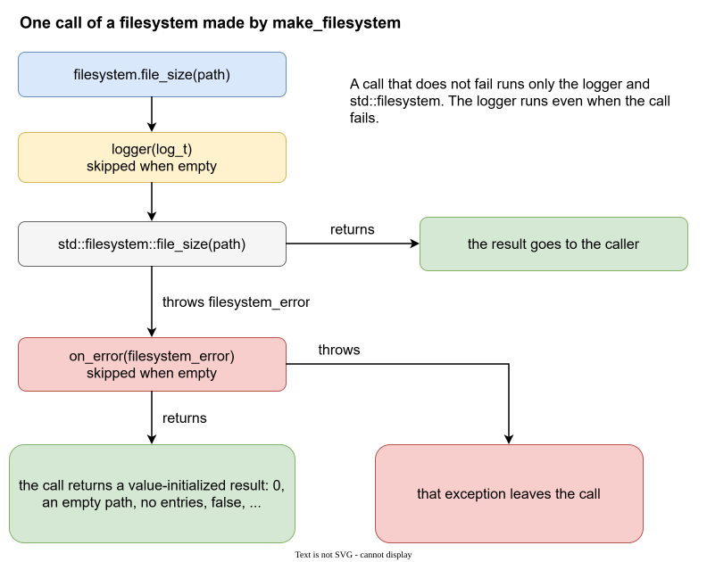

Errors and logging¶
make_filesystem fills a filesystem_t from std::filesystem and puts two functions around every call: a logger that runs before the call, and an error handler that receives a std::filesystem::filesystem_error.
struct make_filesystem_t
{
logger_ft logger; // void (const log_t&)
error_ft on_error; // void (const std::filesystem::filesystem_error&)
content_filter_ft content_filter; // see "File bytes and content_filter"
};
filesystem_t make_filesystem(const make_filesystem_t&);
Every field is optional. An empty function is skipped.
The order of events¶
For every call the order is the same:
- The logger runs with a
log_t: which operation, which paths. - The call goes to
std::filesystem. - If
std::filesystemthrowsfilesystem_error,on_errorruns with it.

std::vector<std::string> events;
const auto filesystem = virtual_filesystem::make_filesystem({
.logger = [&](const virtual_filesystem::log_t& log)
{
events.push_back("log " + log.path.generic_string());
},
.on_error = [&](const std::filesystem::filesystem_error& error)
{
events.push_back("error " + error.path1().generic_string());
}
});
filesystem.file_size("missing.txt");
filesystem.rename({.from = "missing_a.txt", .to = "missing_b.txt"});
events is now:
log missing.txt
error missing.txt
log missing_a.txt
error missing_a.txt
A call is logged even when it fails, and a call that does not fail is logged and nothing more.
What the call returns when on_error returns¶
filesystem_error does not leave the call. When on_error returns, the call returns a value-initialized result, the same as Result{}:
| the call returns | after an error |
|---|---|
bool (create_directory, remove, equivalent, ...) |
false |
std::uintmax_t (file_size, remove_all, ...) |
0 |
path_t (canonical, read_symlink, ...) |
an empty path |
fs::file_status (status, symlink_status) |
type none |
fs::file_time_type |
the epoch of the clock |
fs::space_info |
all three sizes 0 |
entries_t (list) |
no entries |
bytes_t (read) |
no bytes |
bytes_ot (try_read) |
an empty optional |
void (rename, write, ...) |
nothing |
const auto filesystem = virtual_filesystem::make_filesystem({});
filesystem.file_size("missing.txt"); // 0
filesystem.read_symlink("missing.txt"); // an empty path
filesystem.list({.root = "missing_dir"}); // no entries
filesystem.read("missing.txt"); // no bytes
filesystem.remove("missing.txt"); // false
Here the filesystem has no on_error at all: the call neither logs nor throws, and the result is empty. That is the way to say "I do not care about errors".
Warning
A result that is empty after an error looks like a result that is empty because there is nothing to find. If the difference matters, record the error in on_error, or make on_error throw.
exists, is_directory and the other queries treat a status of type none like not_found: a file that could not be examined is not there.
What is not an error¶
Some calls fail without filesystem_error, because std::filesystem and the library say so:
statusandsymlink_statusof a missing file returnfile_type::not_found.on_errordoes not run.try_readof a file that cannot be opened returns an empty optional.on_errordoes not run. That is why the function exists next toread.readof a file that cannot be opened is an error: it throwsfilesystem_errorwithno_such_file_or_directoryfor a missing file andio_errorfor another reason, soon_errorruns.writethat cannot open or finish the file is an error withio_error.
An exception from on_error¶
on_error may throw an exception of its own. The library does not catch it: it leaves the call. Use it to turn a filesystem_error into your own type, or to stop at the first failure:
const auto strict = virtual_filesystem::make_filesystem({
.on_error = [](const std::filesystem::filesystem_error& error)
{
throw std::runtime_error{"cannot use " + error.path1().filename().string()};
}
});
strict.file_size("missing.txt"); // throws std::runtime_error "cannot use missing.txt"
The same holds for the logger: an exception from it leaves the call, and the call to std::filesystem is not made.
The log¶
struct log_t
{
operation_et operation;
path_t path;
path_t other;
};
operation is one of the values of operation_et: STATUS, FILE_SIZE, RENAME, LIST, READ, WRITE and so on. There is one value for every member of filesystem_t except content_filter.
path is the file the call names. It is empty for calls that name no path: CURRENT_PATH and TEMP_DIRECTORY.
other is the second path of a call that names two: the target of RENAME, COPY, CREATE_SYMLINK, CREATE_DIRECTORY_SYMLINK and CREATE_HARD_LINK, and the second path of EQUIVALENT. It is empty for all the others.
const auto filesystem = virtual_filesystem::make_filesystem({
.logger = [](const virtual_filesystem::log_t& log)
{
std::cout << log.path.generic_string() << " -> " << log.other.generic_string() << "\n";
}
});
filesystem.rename({.from = "missing_a.txt", .to = "missing_b.txt"});
It prints:
missing_a.txt -> missing_b.txt
The logger sees the calls of filesystem_t, not the calls of the queries. exists(filesystem, path) shows up as one STATUS.
Note
ABSOLUTE_PATH is not named ABSOLUTE, because wingdi.h defines a macro with that name.
Faking and errors¶
on_error and the logger belong to the filesystem that make_filesystem made. A fake that you write yourself has no logger and no handler: whatever it throws leaves the call. See Replacing calls in a test.